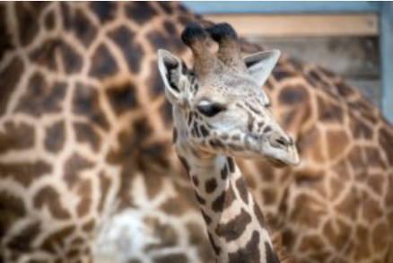
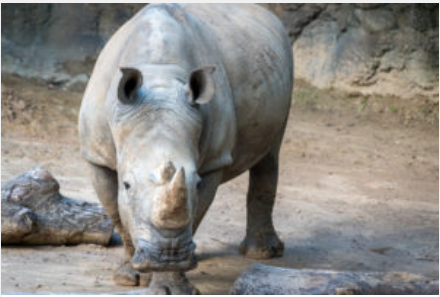
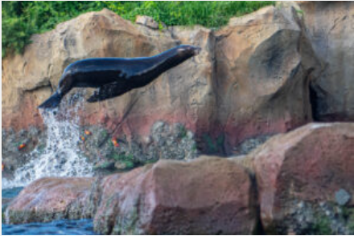
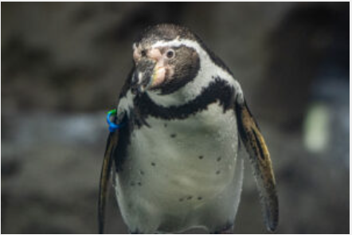
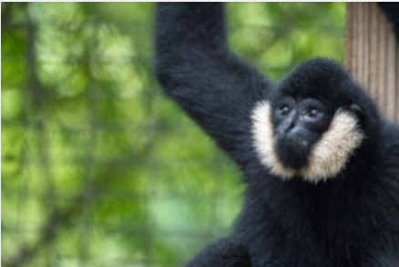
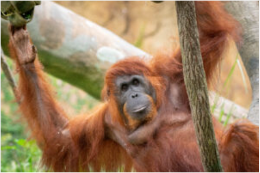
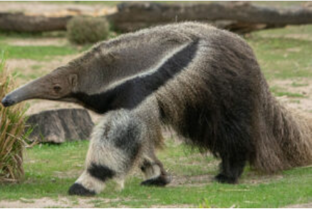
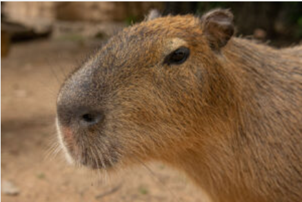
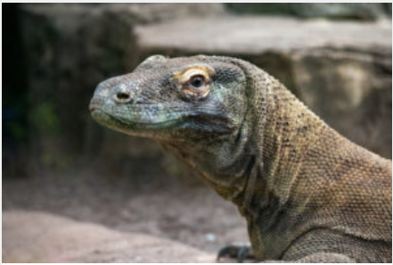
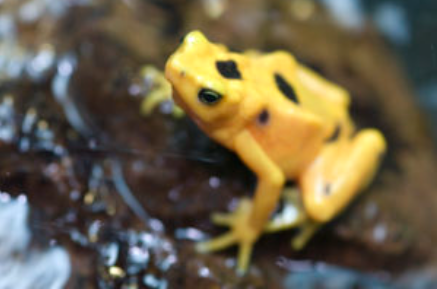

Giraffes are the tallest mammals in the world and are native to the savannas of Africa. They are known for their long necks and legs, and they live in social groups called towers. Giraffes are herbivores, primarily feeding on leaves from acacia trees.

Rhinoceroses are large, thick-skinned mammals known for their distinctive horns. They are native to the grasslands and forests of Africa and Asia. Rhinoceroses are herbivores, feeding on grasses and leaves.

Sea lions are marine mammals native to the Galapagos Islands. They are known for their playful behavior and ability to swim underwater. Sea lions are carnivores, feeding on fish and squid.

Humbolt penguins are flightless birds native to the Galapagos Islands. They are known for their distinctive black and white plumage and their ability to swim underwater. Humbolt penguins are carnivores, feeding on fish and squid.

Gibbons are small to medium-sized apes native to the forests of Southeast Asia. They are known for their long arms and their ability to swing through the trees. Gibbons are herbivores, feeding on fruits, leaves, and bark.

Orangutans are large, intelligent apes native to the forests of Borneo and Sumatra. They are known for their reddish-brown fur and their ability to use tools. Orangutans are herbivores, feeding on fruits, leaves, and bark.

Anteaters are medium-sized mammals native to the tropical rainforests of Central and South America. They are known for their long snouts and their ability to consume ants and termites. Anteaters are insectivores, feeding primarily on ants and termites.

Capybaras are the largest rodents in the world, native to the tropical rainforests of Central and South America. They are known for their semi-aquatic lifestyle and their ability to swim. Capybaras are herbivores, feeding on grasses and aquatic plants.

Komodo dragons are large lizards native to the Indonesian islands. They are known for their size and their ability to hunt prey. Komodo dragons are carnivores, feeding on deer, pigs, and other animals.

Panamanian golden frogs are small, brightly colored amphibians native to the tropical rainforests of Panama. They are known for their vibrant golden coloration and their ability to live in both aquatic and terrestrial environments. Panamanian golden frogs are insectivores, feeding on insects and other small invertebrates.